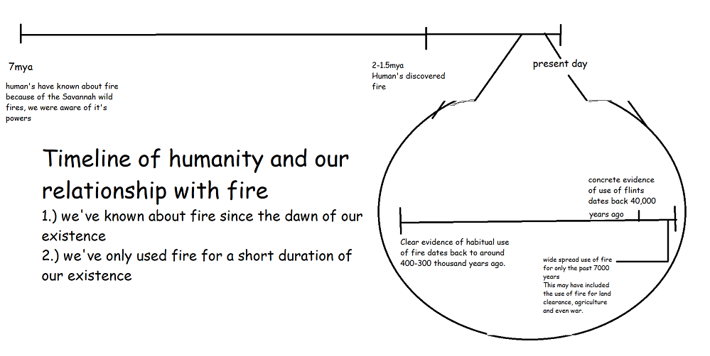

The manipulation of fire
Humans discovered fire around 1.7-2 million years ago but research suggests we’ve known about it for much longer. Savannas in Africa around 7 million years ago regularly need fire or else the local vegetation will convert into a forest. As a result, early humans have probably seen and known about the fire while living on the savannas. The impact of fire is arguably humanity's greatest discovery as it not only affected our evolution but our advancement in technology. Researchers wanted to investigate whether Homo erectus actually cooked - for instance by checking the but marks on bones, more work needs to be done to meet that was consumed raw. They found that yes the Homo Erectus were actually able to cook food and as a result physical changes began to take place in the early hominins. One theory rooted in our manipulation of fire is that when we cooked our food, we could spend less energy digesting and absorbing more nutrients. As a result, our brain grew in size allowing an increase in group sizes and social cognition. At the same time the Homo Erectus evolved, there was a shift toward smaller teeth and stomachs which is consistent with the Homo Erectus being able to cook. Clear evidence of habitual use of fire dates back to around 400-300 thousand years ago when we discovered a hearth in Qesem Cave with the indication of roasting meat. The use of flints may have been around for 400000 years but concrete evidence only indicates 40,000 years. Finally, Humans only began to use fire regularly on a widespread basis for the past 7000 years. This may have included the use of fire for land clearance, agriculture and even war.
 Why I chose fireAccording to Darwin, fire is humanity's greatest discovery attributed to many impacts, fire has not only shaped our evolution but our advancement of technology. Not only has fire impacted us, but hominids are the only species that can manipulate and control fire which gives us humans an exclusive/special relationship with fire that no other creature has. One advantage that fire gives us that separates us from other mammal species is that we have an exceptionally long waking day. Thanks to fire’s ‘daylight extension’ humans have peak awareness in the early evening unlike other primates such as chimpanzees that rise with the dawn and go to sleep around sundown. In addition to a long waking day, fire also protected us from predators and it’s theorized that when cooking food we would use less energy digesting (expensive tissue hypothesis) thus allowing us to grow bigger brains. Finally, fire also reshaped the organization of human sociality, as the cost of fire can be high which encourages the emergence of larger groups.
Communication
Cerebral Cortex
What separates the human brain from the brain of other species? Humans are undoubtedly the smartest species in terms of cognitive ability and processing power. Our complex unique minds can be largely attributed to our cerebral cortex which controls human senses, thoughts, language and memory. In terms of our cognitive process. Due to our large cerebral cortex, human thought processes separate us from the rest of the animal kingdom.
The Cognitive process
text